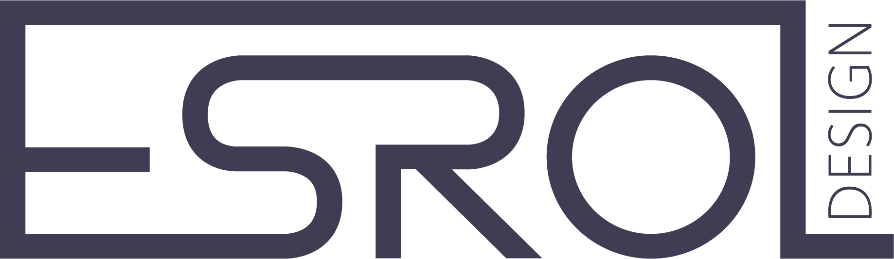

OVER MEZELF
Ik ben 20 jaar oud en ik studeer Grafische & Digitale Media met als afstudeerrichting Crossmedia- Ontwerp aan de AP Hogeschool te Antwerpen. Onder deze tabblad kunt u mijn opleidingen, vaardigheden, ervaringen en de talen die ik spreek vinden.
Tijdens mijn opleiding heb ik geleerd om te werken met HTML, CSS, Javascript en Wordpress. Ook heb ik geleerd om verschillende Adobe programma's te gebruiken zoals After Effects, Premiere Pro, Illustrator, Photoshop en Indesign. Mijn portfolio kunt u vinden onder het tabblad "projecten".
Esrol Design
Esroldesign is de naam die ik gebruik bij mijn eigen ontwerpen. "Esrol" is de combinatie van mijn naam Esra en mijn achternaam Varol. Sinds het derde middelbaar ben ik geïnteresseerd in digitale media en sindsdien gebruik ik deze naam bij mijn projecten.
